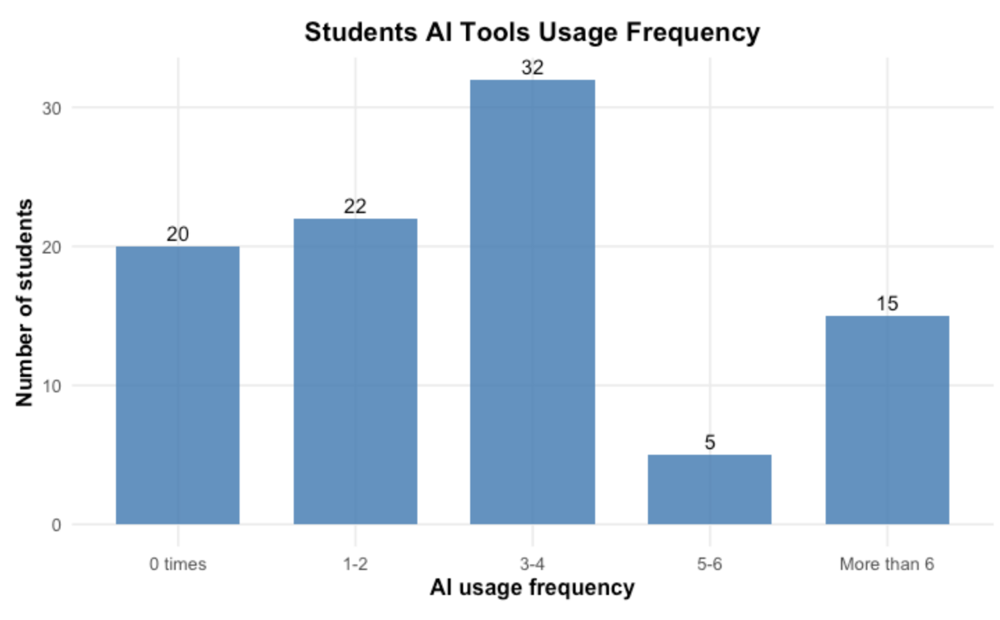
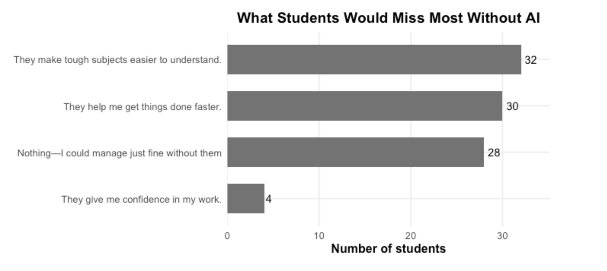
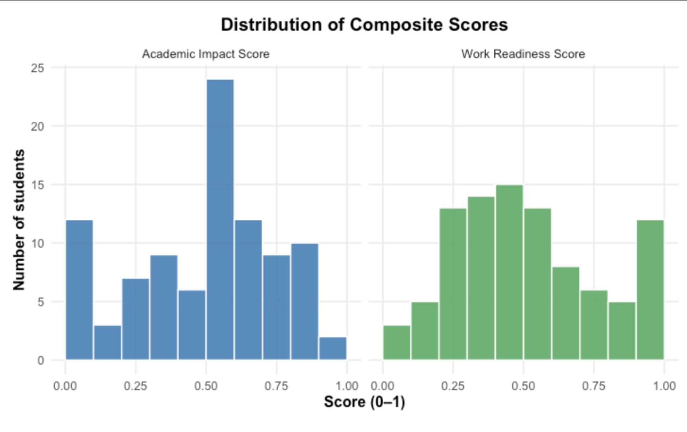
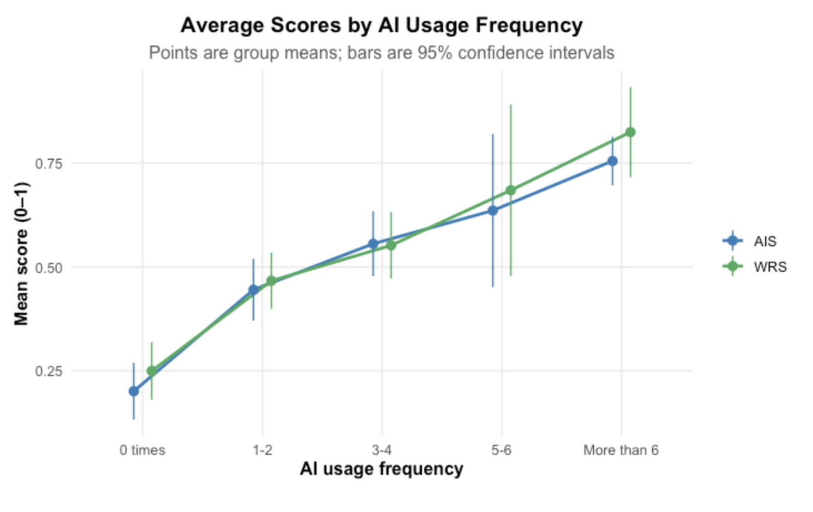
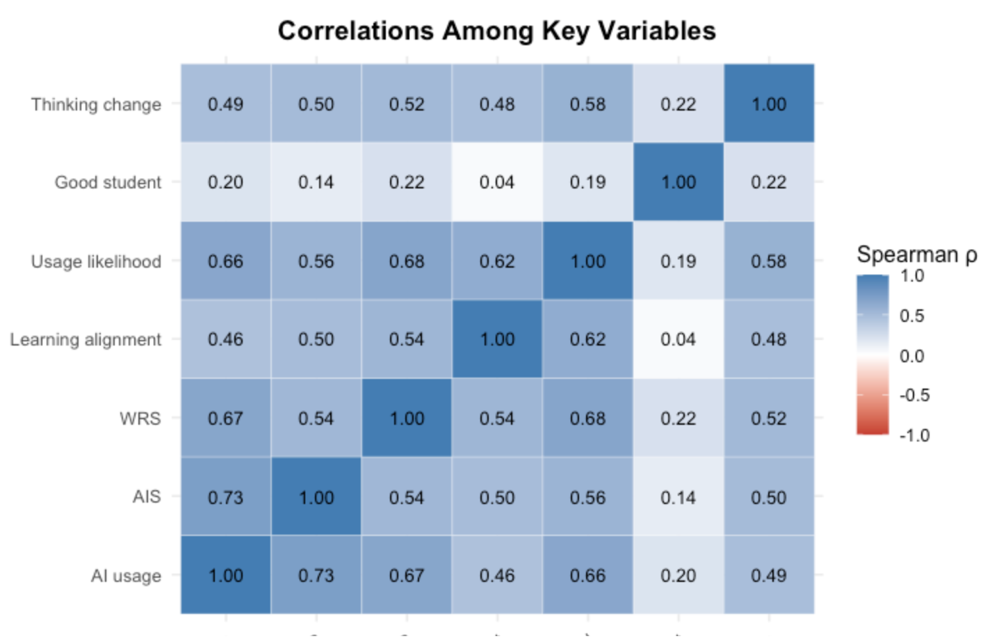
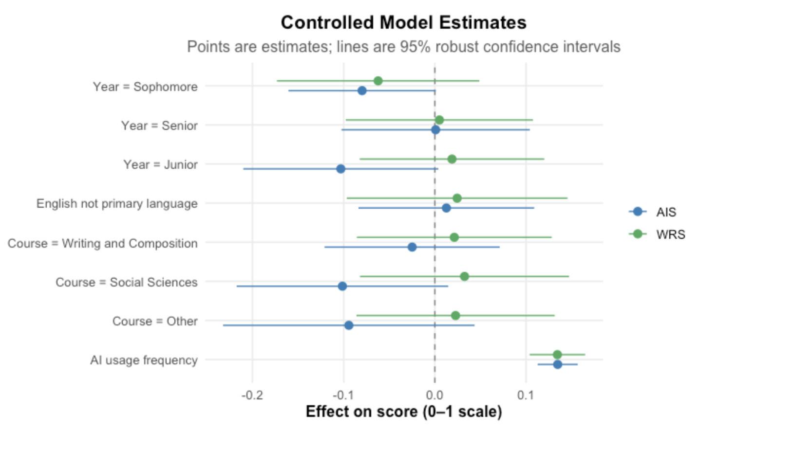
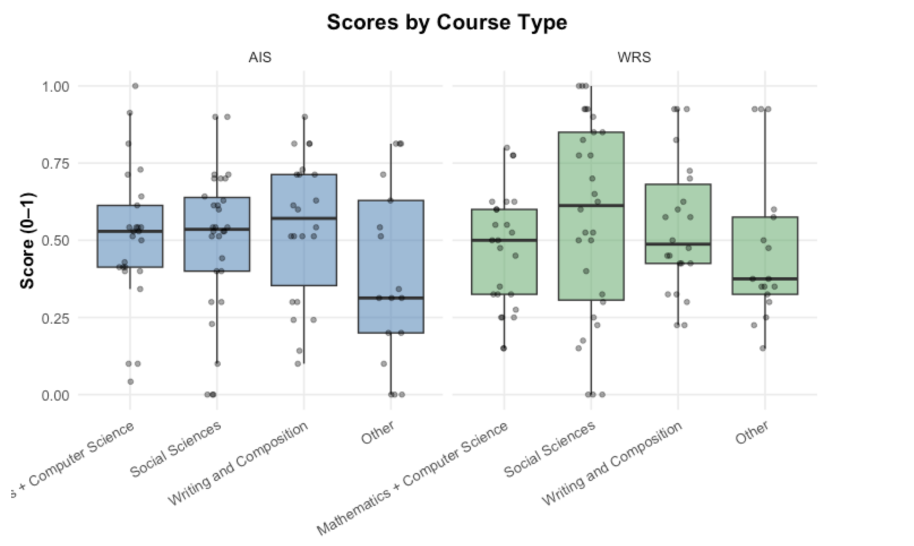
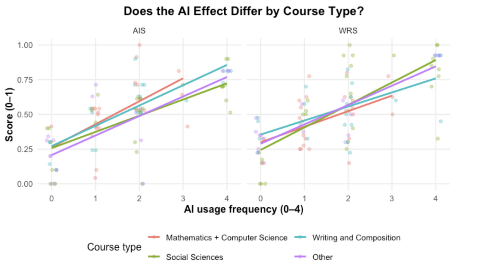

The Effects of Generative AI Adoption on Skill Acquisition and Human Capital Formation.
In the fall of 2024, universities were still deciding how to handle AI tools like ChatGPT, and there was little data on how students were actually using them. For my undergraduate senior project, I set out to collect some. Rather than relying on an existing dataset, I designed my own survey, recruited 94 college students, and in October 2024 asked them how often they use AI tools, how those tools affect their learning and grades, and how prepared they feel for a workplace where AI is common. From their answers I built two scores, each running from 0 to 1. The Academic Impact Score captures whether AI helps students learn, improves their grades, and frees up time for other activities. The Work Readiness Score captures how important students think AI will be for their careers, how much their work would suffer without it, and whether it improves the quality of their work.

Most of the students I surveyed use AI, but few use it heavily. About four in five (79%) had used AI tools at least once and the most common answer was 3–4 times. Twenty students (21%) did not use AI at all, while 15 used it more than six times. Only five students fell in the 5–6 range, so results for that group are less certain than for the others. It is also worth knowing who these 94 students are: they were not randomly selected, and most came from Bard College. The results describe this group well, but they should not be read as true of all college students. When I asked what they would miss most without AI, students valued understanding about as much as speed.

Thirty-two students said AI makes tough subjects easier to understand and 30 said it helps them get things done faster, while only four said it gives them confidence in their work. The remaining 28 said they would miss nothing at all, and this group was largely made up of non-users: it included 15 of the 20 students who never used AI. Their average Academic Impact Score was just 0.27, compared with roughly 0.56 to 0.61 for students who named a benefit.

Across the whole sample, both scores center near the middle of the scale but spread widely, which tells me students' experiences with AI differ a great deal. The average Academic Impact Score was 0.49, with a quarter of students clustered between 0.5 and 0.6 and a tail of low scores from students who see little academic benefit. Work Readiness Scores averaged 0.52 and were more evenly spread, including a group of 13 students at 0.9 or above who see AI as central to their future work. These scores are best read as summaries of several related experiences rather than precise measures of a single trait. When I tested how closely the questions within each score agreed with one another, the agreement was modest, so in the full paper I check that my conclusions do not depend on how the questions were weighted. The clearest pattern in my data appears when I compare students by how often they use AI.

Both scores rise steadily with every step up in use. Students who never used AI averaged 0.20 on academic impact and 0.25 on work readiness, while those who used it more than six times averaged 0.76 and 0.83, roughly three times higher. The largest jump comes between no use and light use, and each step after that adds a smaller but consistent gain. The bars around each point show the range where the true average likely falls; the 5–6 group has the widest bars because it is so small. This is the central finding of the project, but it needs careful reading. The survey captured a single moment in time, so it shows that heavy AI use and higher scores go together, not that AI causes the higher scores; students who already find AI helpful are likely to use it more. Part of the link is also built into the questions themselves. A student who uses AI often will almost automatically say their work would suffer more without it, and that answer is one of the pieces of the Work Readiness Score.

TThe correlation grid shows how strongly each pair of measures moves together, from −1 to 1, with darker blue meaning a stronger positive link. AI use has the strongest links of anything I measured: 0.73 with academic impact and 0.67 with work readiness. Students who use AI more also say they are more likely to keep using it (0.66) and that it changes how they think (0.49). The weakest link is with the question about AI and being a good student (0.20), which suggests that frequent users report real benefits without seeing that question much differently from anyone else. A strong pattern like this could be driven by other differences between students, so I tested it with regression models that also accounted for each student's subject area, college year, and whether English is their primary language.

In this graph, each dot shows how much a factor changes a score, and each line shows the range of likely values; a line that crosses the dashed zero line means that factor has no clear effect. AI use is the only factor that sits clearly to the right of zero, adding about 0.13 to both scores for each step up in usage, while subject, year, and language all cross zero. AI use alone explains about half the differences in students' scores, and adding the other factors barely changes its effect. Accounting for these factors makes the finding more convincing, but it cannot rule out differences I did not measure, such as a student's motivation or prior grades. Finally, I wanted to know whether a student's field of study matters.

Scores look broadly similar across subject areas. Social sciences students had the highest typical work readiness score and the "other" group had the lowest typical academic impact score, but statistical tests found these differences small enough to be due to chance. I also checked whether AI helps more in some subjects than others.

Each line in this graph shows how scores rise with AI use within one subject, and all four slope upward at similar angles, so the benefit linked to AI use looks about the same in math and computer science, the social sciences, writing, and other fields. Some of these subject groups are small, though, so a modest difference between subjects could exist without showing up in a sample of this size.
Taken together, these results show that among the 94 students I surveyed, more frequent AI use goes hand in hand with stronger academic benefits and a greater sense of readiness for AI-heavy work, and that this link holds across subjects, years, and language backgrounds. The study has clear limits. The sample is small and was not randomly drawn, so the findings describe this group rather than all college students. The design shows association, not cause and effect. Every answer is self-reported, so "AI improved my grades" reflects how students see their own work rather than a measured change in their grades. The two scores also combine several different experiences, and part of the link with AI use is built into how they were constructed.
Even with those limits, I believe the project has real value. It offers an original, carefully tested snapshot of how students were using AI at a moment when schools were still writing their policies, and it works well as a pilot study for larger research. The natural next steps would be a bigger sample drawn from several schools, actual grades in place of self-reported improvement, and following the same students across a semester to see whether changes in AI use come before changes in their outcomes.
Interested in the code? View it on GitHub →